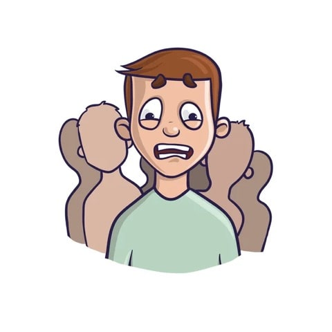
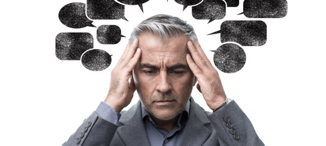

Home
Self help
Daily Tasks
Voice Spaces
Blog on social Anxiety

OVERCOMING SOCIAL ANXIETY BY EMBRACING UNCERTAINTY
WHEN SOCIAL ANXIETY RUINS A GREAT EVENING
WANNA OVERCOME YOUR SOCIAL ANXIETY ?

IS SOCIAL ANXIETY OBJECTIVE?
OVERCOME SOCIAL ANXIETY BY REDUCING YOUR AVOIDANCE MODES
DOES YOUR SOCIAL ANXIETY KEEP YOU UP AT NIGHT?